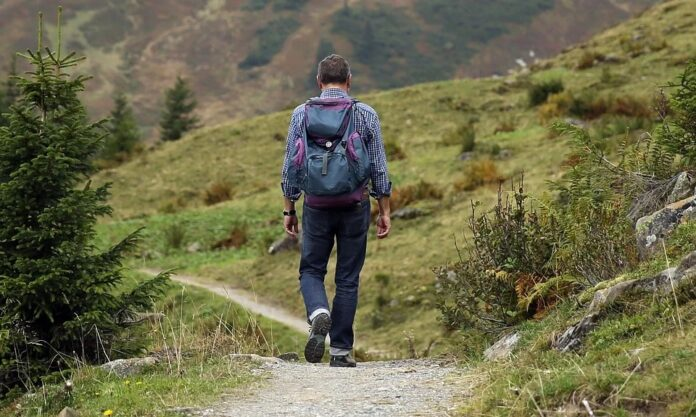

HOBBIES
VIDEOJUEGOS
Desde pequeño me han gustado los videojuegos. Es una actividad que me ha acompañado durante toda mi vida y espero que siga siendo asi. Me gusta jugar a videojuegos ya que en el momento en el que te pones a jugar, tienes multiples historias que vivir, decisiones que tomar, o partidas que ganar. Aparte tambien me gusta por su mercado ya que si te adentras en este mundo puedes encontrar juegos no tan conocidos pero que son increibles.
MUSICA
Todos los dias esucho musica para todo. Ha llegado un punto en el que si no estoy escuchando musica me altero y pierdo la concentracion mucho mas rapido. Me gusta esucharla y he tenido momentos donde he creado bases para canciones de rap en su mayoria. Por lo que este es uno de mis hobbies principales.

SENDERISMO
El senderismo es una cosa que me ha gustado gracias a mis padres. Esto es ya que cada fin de semana me llevaban a la montaña para andar y no esperaban un no como respuesta. Despues de hacer este ejercicio de manera regular, he aprendido a aceptarlo y a tenerlo como una actividad divertida y preciada.
